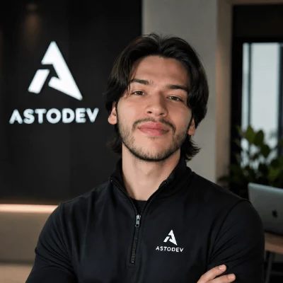

Hablar simple.
Explicar primero el problema y el beneficio. La tecnología se nombra cuando ayuda a decidir.
Tecnología que hace crecer tu negocio. Un sistema reconocible, claro y listo para aplicarse en cada punto de contacto.
La tecnología tiene valor cuando mueve el negocio.
Explicar primero el problema y el beneficio. La tecnología se nombra cuando ayuda a decidir.
Elegir la solución por su utilidad para el negocio, no por la novedad de la herramienta.
Plantear relaciones de largo plazo y evolución del producto, sin prometer resultados no medidos.
Dos cuadrados redondeados superpuestos forman el signo gráfico digital. El nombre se escribe Astodev, con la misma capitalización en comunicaciones y piezas nuevas.
El verde azulado representa sistemas y flujo. El latón aporta una señal de valor y negocio.
La firma horizontal retoma el tratamiento monoespaciado del sitio y mantiene una lectura inmediata.
El icono cuadrado existe como SVG. Las composiciones con nombre de esta guía son adaptaciones recomendadas para piezas nuevas.
Dejar alrededor al menos el ancho de un cuadrado pequeño del símbolo. Nunca acercar texto o bordes al signo.
Firma horizontal: 120 px en digital. Símbolo: 24 px. Si pierde nitidez, aumentar tamaño o simplificar.
No deformar, rotar, añadir sombras ni cambiar por otros tonos. Evitar fondos que reduzcan el contraste.
La base oscura deja que el contenido lleve el peso. El verde señala flujo y acción; el latón marca valor, énfasis y negocio.
Fondo: grafito. Tarjetas y planos: #10141C, #161B25 y #1C2230. Separadores sutiles, no bloques pesados.
Texto principal: marfil. Texto secundario: #B7BCC6. Etiquetas tenues: #878E9B, solo donde conserve legibilidad.
Reservar señal y latón para acciones, datos y focos puntuales. Comprobar contraste en cada tamaño y fondo.
Tres familias, tres funciones. Mantenerlas separadas hace que la marca sea expresiva sin perder claridad.
Titulares: 36–72 px según espacio. Subtítulos: 28–44 px. Texto de lectura: 16–18 px con interlineado cercano a 1,6.
Limitar el ancho de párrafos; evitar mayúsculas sostenidas en textos largos. Usar mono en fragmentos breves, con espaciado generoso.
Construimos tecnología alrededor de tus procesos y objetivos. Empieza por contarnos qué quieres mejorar.
Capas oscuras, bordes finos y superficies sobrias. Evitar sombras decorativas innecesarias.
Bloques amplios y alineación constante. Agrupar texto relacionado y dar aire a la llamada a la acción.
Radio digital de 6 px. La acción principal usa marfil sobre grafito; el hover puede tomar el latón.
Transiciones breves y funcionales. Respetar preferencias de movimiento reducido.
IMÁGENES
Usar trabajo real, retratos auténticos y capturas verificables. Las ilustraciones deben explicar un proceso o producto.
RESPONSIVE
Conservar jerarquía y lectura en móvil. Evitar textos sobrepuestos, botones comprimidos y gráficos que pierdan significado.
ACCESIBILIDAD
Contraste, foco visible, texto alternativo y tamaños de lectura cómodos son parte del sistema de marca.
Astodev habla con seguridad tranquila: explica el problema, el alcance y el beneficio sin prometer cifras que no puede demostrar.
“Conectamos tu formulario con una base de datos para que cada solicitud quede organizada.”
Concreto, comprensible y comprobable.“Cuéntanos qué proceso quieres mejorar y revisamos juntos el punto de partida.”
Un siguiente paso claro, sin presión artificial.“Diseñamos y desarrollamos la tienda de Driven en Shopify, con catálogo e inventario.”
El caso describe trabajo entregado, no métricas supuestas.“Transformación 360° garantizada con crecimiento exponencial inmediato.”
Suena genérico y promete resultados no acreditados.Directo, humano, profesional. Usar frases activas y ejemplos cercanos a la operación de un negocio.
Preferir “tienda online”, “software a medida”, “automatizar” y “conectar sistemas” a tecnicismos sin explicación.
Usar proyectos y entregables reales. No inventar testimonios, premios, cifras de conversión ni porcentajes de ahorro.

Priorizar fotografías auténticas, luz natural o controlada y una expresión cercana. Vincular nombre, cargo y empresa.
Mostrar sitios y productos reales cuando exista permiso. Acompañar la imagen con alcance y contexto del proyecto.
Recortes limpios, contraste suficiente y fondos discretos. Evitar filtros fuertes que alteren colores de clientes.
No presentar maquetas conceptuales como capturas de un proyecto entregado. Identificar ejemplos ilustrativos.
Esta guía formaliza el sistema visual y verbal observado en la web y el repositorio al 1 de octubre de 2026. El símbolo y la paleta proceden de activos existentes. Los lockups horizontal, claro y monocromo, y las reglas de tamaños/espaciado son recomendaciones de aplicación derivadas del sistema actual. No documenta una marca registrada ni sustituye archivos maestros vectoriales aprobados legalmente.